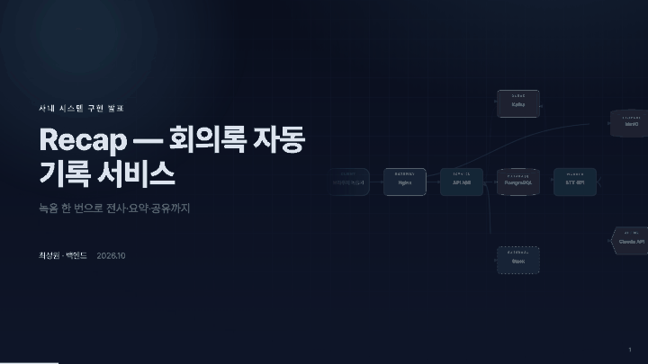

Claude Code 플러그인
deck-builder 라이브 데모
코드베이스와 문서를 읽어, 데이터 흐름이 움직이는 모션 발표 장표를 단일 HTML 로 만듭니다. 아래 예시는 실제 생성물이며 직접 조작해 볼 수 있습니다.
- → Space 다음 단계
- ← 이전
- o 전체 보기
- s 발표자 노트
- t 테마 전환
- f 전체화면
모션 슬라이드 데모
터미널, 숫자 카운트업, 벤토, 스크린샷 하이라이트, 코드 매직무브, 타임라인. aurora 테마.
열기 →
시스템 구조 · 요청 흐름
애니메이션 토폴로지와 한 단계씩 진행되는 요청 흐름. dark 테마.
열기 →
같은 내용, toss 테마
흰 배경, 블루 포인트, 큰 타이포. 경영진·비개발 직군용.
열기 →
미리보기
